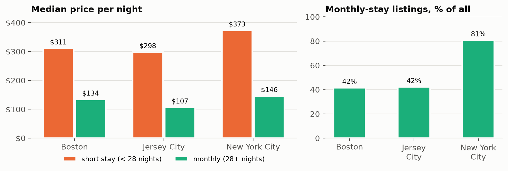
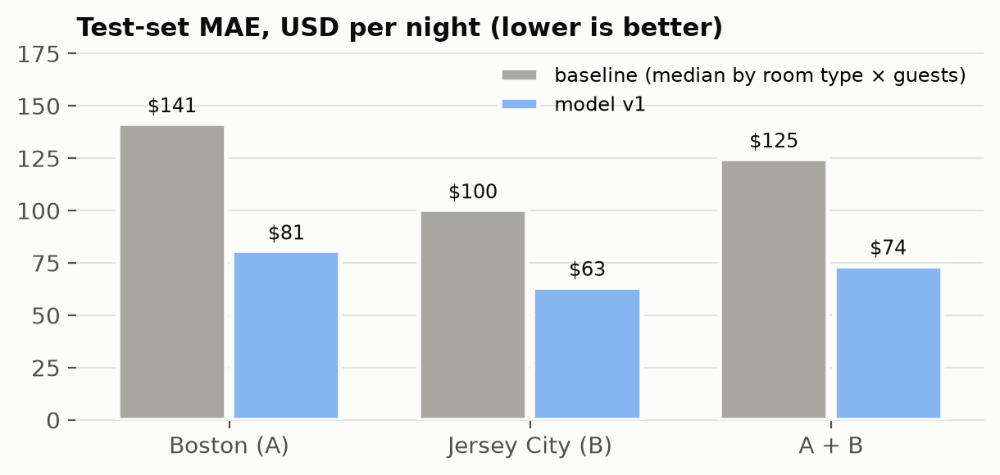
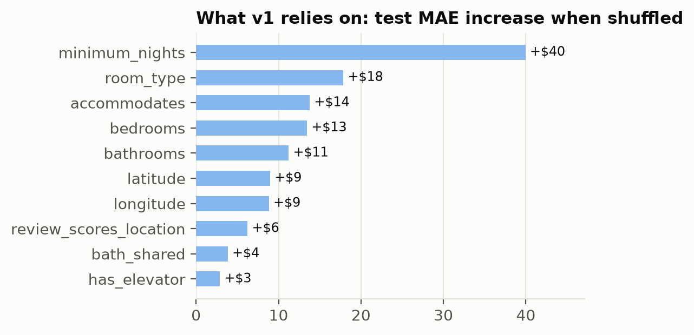
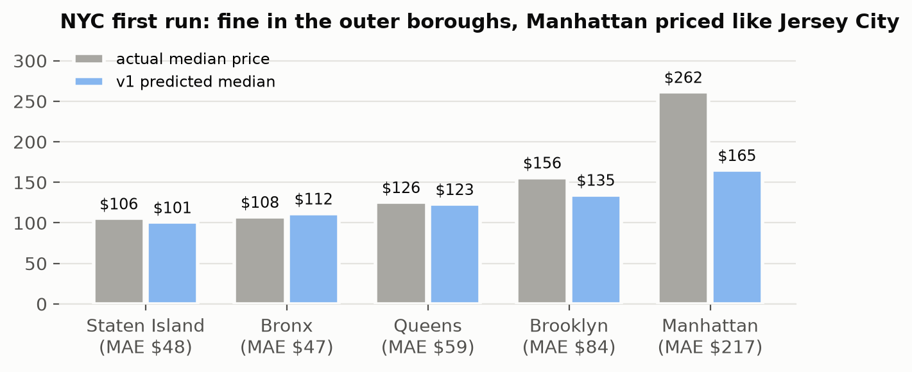
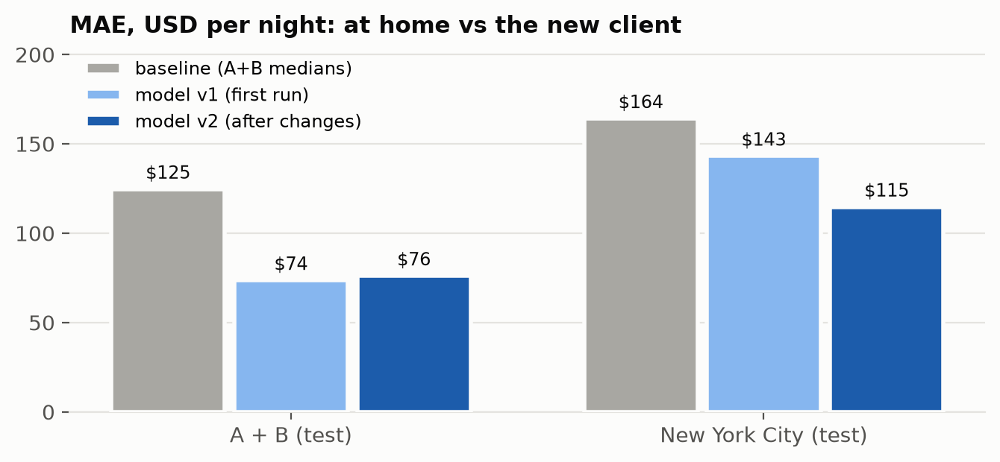
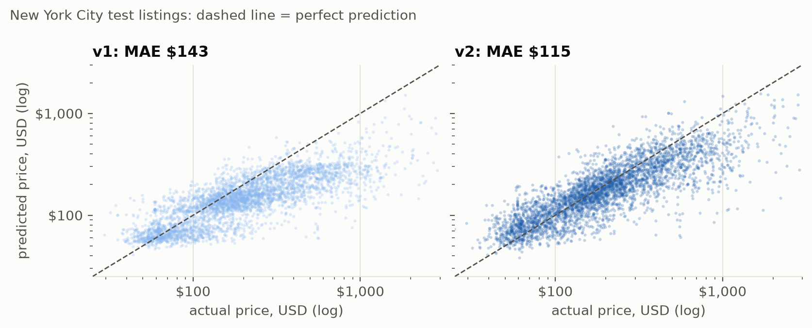

Boston (A) and Jersey City (B) to build it · New York City (C) as the new client
city is a parameter.Everything is in the repository as code: bundle, notebooks, dashboard JSON, Genie config.
| City | Role | Snapshot | Listings | No price | Median price |
|---|---|---|---|---|---|
| Boston | A · training | 2026-09-19 | 4,368 | 20.2% | $253 |
| Jersey City | B · training | 2026-09-21 | 2,330 | 10.1% | $215 |
| New York City | C · new client | 2026-09-14 | 29,918 | 35.1% | $181 |
Detailed listings.csv.gz, 90 columns, identical schema in all three cities.
14 columns are 100% empty in this scrape (all host response fields, bathrooms, instant_bookable).
The region's largest and most expensive market, and the only one under Local Law 18 (registration needed for stays under 30 nights). The hardest realistic test of transfer.
City C was not loaded until the pipeline and model for A and B were committed.

New York is on the chart for context; it was profiled only after week 1.
| Column | Why it leaks |
|---|---|
price_quote_price_per_night | equals price (to rounding) for every priced listing |
price_quote_total_price | price × nights (+ taxes) |
price_quote_raw | JSON quote: “3 nights x $189.00” |
price_quote_checkin/checkout_date | part of the same quote; null exactly when price is null |
estimated_revenue_l365d | = price × estimated occupancy |
20% of listings per city go to test by hash(id) mod 100 < 20, fixed in gold before any model existed.
listings.csv.gzcities.jsonlistings_raw: every column a STRING + city, snapshot, source file, ingest timelistings: typed with try_cast, parsed price / bathrooms / amenities, de-duplicated, price class and flags, leak columns dropped, data-quality gateslistings · city_metrics · neighbourhood_metricslisting_features (+ fixed split)price_predictions · model_metricspipeline_runs (audit)Strings in bronze. Typing at read time would silently null bad values; silver counts every value that fails to parse and stops the run above 1%.
One table per layer, partitioned by city. Re-running a city rewrites only its partition; cross-city comparison is a GROUP BY.
Immutable model versions. The first New York run had to use the week-1 model exactly, so v1 is never overwritten.
| Job (Databricks Asset Bundle) | What it does |
|---|---|
airbnb_city_pipelineparam city | setup → bronze → silver → gold |
airbnb_etl | for_each city in a list → the job above |
airbnb_train_price_model | ETL for training cities → train, evaluate, save version |
airbnb_onboard_city | city pipeline → score with a saved version, no refit |
try_cast; shared code in src/airbnb.gold.pipeline_runs.scripts/run_local.py runs the same notebooks on local Spark 4 + Delta; the numbers in this deck come from those runs. Once the workspace was back, every job ran on Databricks and reproduced them within ~1% (NYC: v1 $144.19, v2 $115.08).

Baseline: median training price for the same room type and number of guests. Model: chosen by 5-fold CV on the training split among ridge and three boosting variants (CV MAE $70.7). Absolute loss on log price = predicts the median price, the MAE-optimal estimate. Features: unit size and privacy, stay rules, location, amenities, host, reviews — no leak columns.
| Step | Result |
|---|---|
| Download, bronze | 29,918 rows, same 90 columns |
| Silver | 0 parse failures, 0 duplicates |
| Gold, scoring | all listings scored with v1 |
| MAE, NYC test | $143.2 (baseline $164.2) |
| MAE, A + B test | $73.6 |
| Mean error | −$128 a night (under-pricing) |
Nothing failed and nothing warned — although 35% of the target was missing and 81% of listings were monthly rentals.

city 100% unseen, neighbourhoods 99% unseen. “Chinatown” exists in both cities: Manhattan's Chinatown got Boston's Chinatown effect ($405 actual, $220 predicted). NYC coordinates fall next to Jersey City's.| Kind | Change | Reason |
|---|---|---|
| config | add new-york-city to cities.json | the designed way to add a city |
| pipeline | carry neighbourhood_group (borough) to silver and gold | empty in A/B, full in C — silently dropped |
| pipeline | required vs optional source columns | city files differ; a missing optional column must not crash silver |
| pipeline | target and market profile with warnings | first run was green with 35% of the target missing; now NYC raises 4 warnings |
| pipeline | input-drift report at scoring | nobody was told the model scored unseen inputs (city 100%, neighbourhood 99%) |
| model | drop city, neighbourhood, latitude, longitude | city-specific: unseen levels, homonyms, coordinates out of context |
| model | market comps: median price of the 20 nearest same-type listings (and 50 of any type) from the city's own training split — never the listing itself or its host | a price level the model never saw: anchor on the local market |
| model | predict log(price / comp price) instead of log(price) | trees cannot extrapolate a level; now they only learn adjustments |
Checked and kept: the $750-per-guest rule (NYC's 111 flags are placeholders and $1,000+ single rooms), the 28-night threshold, the baseline.

| The $69.5 first-run gap | $ / night |
|---|---|
| v2 gives up at home (A+B $73.6 → $76.1) | 2.5 |
| features and price level that did not transfer (v1 → v2) | 28.5 |
| learnable only from NYC data (v2 → v2 retrained with NYC: $87.6) | 27.1 |
| NYC is a more spread-out market ($87.6 vs $76.1) | 11.5 |
In relative terms the NYC-trained reference is almost as good as at home (MAPE 25.4% vs 22.8%); the same relative miss on a $400–$7,800 Manhattan listing is many more dollars.

v2_abc reference) reaches $87.6 — what we would ship after the first week.Generated from dashboards/build_dashboard.py, deployed by the bundle.
has_valid_price.split = 'test'; “first run” = v1, current = v2.“Median price of entire homes in City A?” → $297.16. “Where does the model under-price most?” → Manhattan (−$125 mean error with v2).
price_quote_* columns (all leaks), 14 empty host columns.CAST('1.0' AS INT) fails (Jersey City writes 1.0); we cast through DOUBLE with try_cast and count every value that stops parsing.| Member | Contribution |
|---|---|
| … | EDA and leakage review |
| … | Lakehouse architecture and pipeline |
| … | Price model and city C analysis |
| … | Dashboard, Genie and presentation |
Names to be filled in by the team.